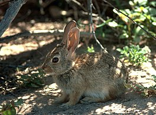
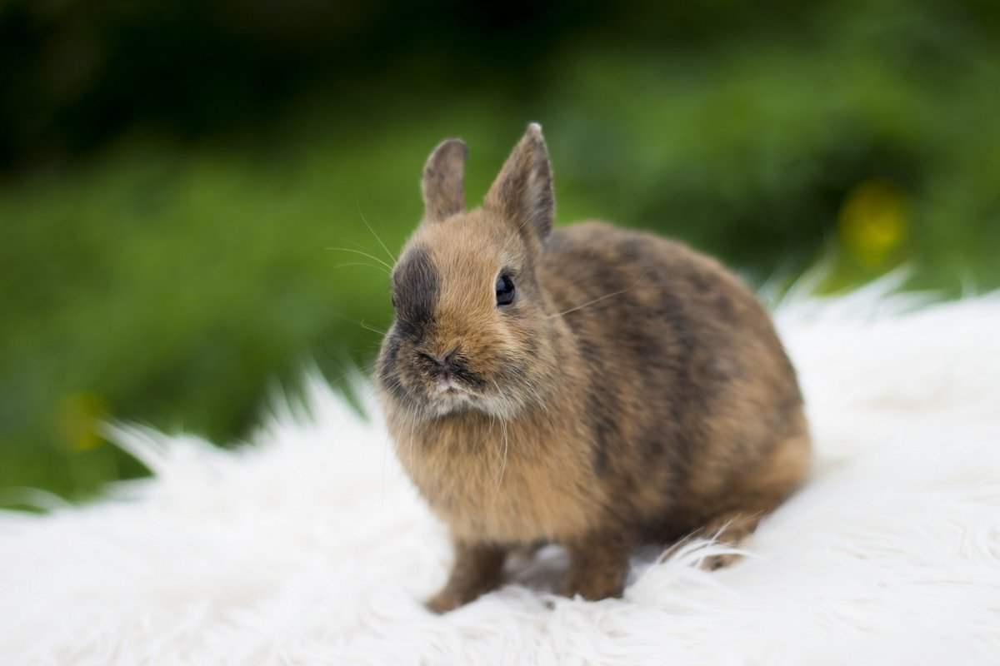
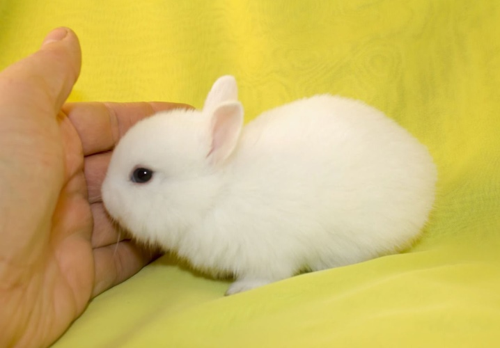
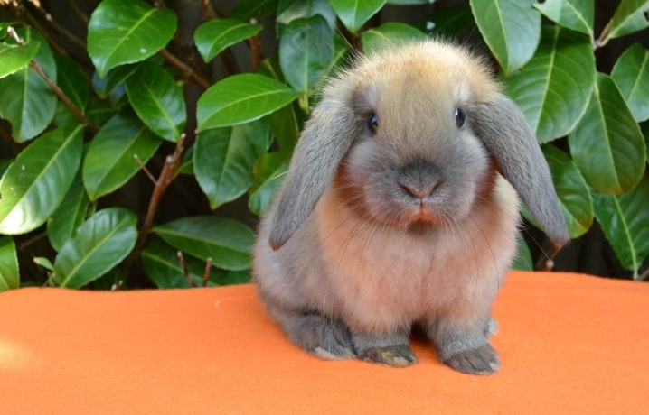
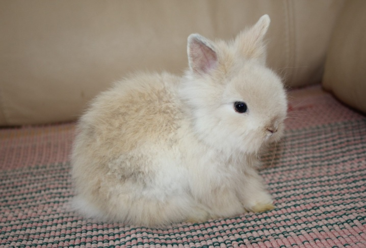

Виды кроликов
Кролики
Виды кроликов
Что едят кролики
Мои кролики
Популярные породы декаративных кроликов
Короткошерстные цветные карлики.

Гермелин.

Вислоухие.

Ангорские карликовые.

Нажмитие сюда и посмотрите полный список пород